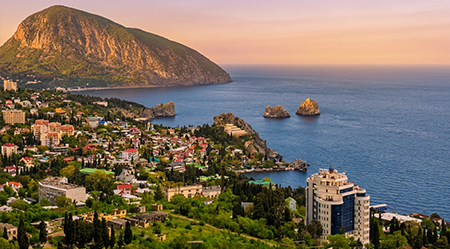

В XIV веке генуэзцы закрепили за собой прибрежную полосу от Балаклавы до Судака, образовав
административную единицу — Капитанство Готия (Capitanatus Gotie). Гурзуф, который в генуэзских
документах значился как Горзовиум (Gorzovium), стал одним из четырех главных консульств на этом
побережье (наряду с Алуштой, Партенитом и Ялтой).
Скала Дженевез-Кая (Генуэзская скала) Главный памятник итальянского присутствия в Гурзуфе буквально
возвышается над морем — это 70-метровая скала Дженевез-Кая (в переводе с крымскотатарского
«Генуэзская скала»). Именно здесь находилась средневековая цитадель.
Если мы поднимемся на вершину Дженевез-Кая, то увидим остатки оборонительных стен, сложенных из
местного мраморовидного известняка на прочном известковом растворе. Помимо остатков жилых построек
генуэзского гарнизона, археологи обнаружили руины небольшой трехнефной базилики, в которой молились
католики-генуэзцы и православное население.
Спустившись к набережной, давайте посмотрим на знаменитые скалы-близнецы Адалары, возвышающиеся в море.
Для генуэзских мореплавателей они служили важнейшим навигационным ориентиром. Итальянские торговые суда
(нефы и галеры), следовавшие из Каффы в Чембало (Балаклаву) или обратно, шли вдоль берега.

Гурзуф

Скала Дженевез-Кая